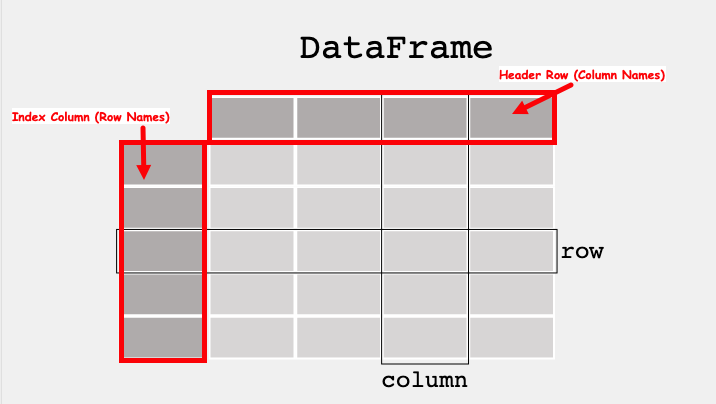

ENGR 1330 Computational Thinking with Data Science
Last GitHub Commit Date: 14 February 2021
Lesson 7 The Pandas module
- About Pandas
- How to install
- Anaconda
- JupyterHub/Lab (on Linux)
- JupyterHub/Lab (on MacOS)
- JupyterHub/Lab (on Windoze)
- The Dataframe
- Primatives
- Using Pandas
- Create, Modify, Delete datagrames
- Slice Dataframes
- Conditional Selection
- Synthetic Programming (Symbolic Function Application)
- Files
- Access Files from a remote Web Server
- Get file contents
- Get the actual file
- Adaptations for encrypted servers (future semester)
Special Script Blocks
%%html
<!--Script block to left align Markdown Tables-->
<style>
table {margin-left: 0 !important;}
</style>
Objectives
- To understand the dataframe abstraction as implemented in the Pandas library(module).
- To be able to access and manipulate data within a dataframe
- To be able to obtain basic statistical measures of data within a dataframe
- Read/Write from/to files
- MS Excel-type files (.xls,.xlsx,.csv) (LibreOffice files use the MS .xml standard)
- Ordinary ASCII (.txt) files
- Access files directly from a URL (advanced concept)
- Using a wget-type function
- Using a curl-type function
- Using API keys (future versions)
Pandas:
Pandas is the core library for dataframe manipulation in Python. It provides a high-performance multidimensional array object, and tools for working with these arrays. The library’s name is derived from the term ‘Panel Data’. If you are curious about Pandas, this cheat sheet is recommended: https://pandas.pydata.org/Pandas_Cheat_Sheet.pdf
Data Structure
The Primary data structure is called a dataframe. It is an abstraction where data are represented as a 2-dimensional mutable and heterogenous tabular data structure; much like a Worksheet in MS Excel. The structure itself is popular among statisticians and data scientists and business executives.
According to the marketing department "Pandas Provides rich data structures and functions designed to make working with data fast, easy, and expressive. It is useful in data manipulation, cleaning, and analysis; Pandas excels in performance and productivity "
The Dataframe
A data table is called a DataFrame in pandas (and other programming environments too). The figure below from https://pandas.pydata.org/docs/getting_started/index.html illustrates a dataframe model:

Each column and each row in a dataframe is called a series, the header row, and index column are special.
Like MS Excel we can query the dataframe to find the contents of a particular cell using its row name and column name, or operate on entire rows and columns
To use pandas, we need to import the module.
Computational Thinking Concepts
The CT concepts expressed within Pandas include:
Decomposition: Data interpretation, manipulation, and analysis of Pandas dataframes is an act of decomposition -- although the dataframes can be quite complex.Abstraction: The dataframe is a data representation abstraction that allows for placeholder operations, later substituted with specific contents for a problem; enhances reuse and readability. We leverage the principle of algebraic replacement using these abstractions.Algorithms: Data interpretation, manipulation, and analysis of dataframes are generally implemented as part of a supervisory algorithm.
Module Set-Up
In principle, Pandas should be available in a default Anaconda install - You should not have to do any extra installation steps to install the library in Python - You do have to import the library in your scripts
How to check
- Simply open a code cell and run import pandas if the notebook does not protest (i.e. pink block of error), the youis good to go.
import pandas
If you do get an error, that means that you will have to install using conda or pip; you are on-your-own here! On the content server the process is:
- Open a new terminal from the launcher
- Change to root user
suthen enter the root password sudo -H /opt/jupyterhib/bin/python3 -m pip install pandas- Wait until the install is complete; for security, user
compthinkis not in thesudogroup - Verify the install by trying to execute
import pandasas above.
The process above will be similar on a Macintosh, or Windows if you did not use an Anaconda distribution. Best is to have a sucessful anaconda install, or go to the GoodJobUntilMyOrgansGetHarvested.
If you have to do this kind of install, you will have to do some reading, some references I find useful are: 1. https://jupyterlab.readthedocs.io/en/stable/user/extensions.html 2. https://www.pugetsystems.com/labs/hpc/Note-How-To-Install-JupyterHub-on-a-Local-Server-1673/#InstallJupyterHub 3. https://jupyterhub.readthedocs.io/en/stable/installation-guide-hard.html (This is the approach on the content server which has a functioning JupyterHub)
Dataframe-type Structure using primative python
First lets construct a dataframe like object using python primatives. We will construct 3 lists, one for row names, one for column names, and one for the content.
import numpy
mytabular = numpy.random.randint(1,100,(5,4))
myrowname = ['A','B','C','D','E']
mycolname = ['W','X','Y','Z']
mytable = [['' for jcol in range(len(mycolname)+1)] for irow in range(len(myrowname)+1)] #non-null destination matrix, note the implied loop construction
The above builds a placeholder named mytable for the psuedo-dataframe.
Next we populate the table, using a for loop to write the column names in the first row, row names in the first column, and the table fill for the rest of the table.
for irow in range(1,len(myrowname)+1): # write the row names
mytable[irow][0]=myrowname[irow-1]
for jcol in range(1,len(mycolname)+1): # write the column names
mytable[0][jcol]=mycolname[jcol-1]
for irow in range(1,len(myrowname)+1): # fill the table (note the nested loop)
for jcol in range(1,len(mycolname)+1):
mytable[irow][jcol]=mytabular[irow-1][jcol-1]
Now lets print the table out by row and we see we have a very dataframe-like structure
for irow in range(0,len(myrowname)+1):
print(mytable[irow][0:len(mycolname)+1])
['', 'W', 'X', 'Y', 'Z']
['A', 19, 21, 22, 81]
['B', 94, 75, 66, 44]
['C', 70, 56, 47, 63]
['D', 56, 80, 39, 39]
['E', 66, 78, 39, 15]
We can also query by row
print(mytable[3][0:len(mycolname)+1])
['C', 70, 56, 47, 63]
Or by column
for irow in range(0,len(myrowname)+1): #cannot use implied loop in a column slice
print(mytable[irow][2])
X
21
75
56
80
78
Or by row+column index; sort of looks like a spreadsheet syntax.
print(' ',mytable[0][3])
print(mytable[3][0],mytable[3][3])
Y
C 47
Now we shall create a proper dataframe
We will now do the same using pandas
mydf = pandas.DataFrame(numpy.random.randint(1,100,(5,4)), ['A','B','C','D','E'], ['W','X','Y','Z'])
mydf
| W | X | Y | Z | |
|---|---|---|---|---|
| A | 97 | 20 | 61 | 35 |
| B | 74 | 8 | 7 | 99 |
| C | 75 | 67 | 52 | 82 |
| D | 92 | 83 | 90 | 28 |
| E | 80 | 67 | 4 | 24 |
We can also turn our table into a dataframe, notice how the constructor adds header row and index column
mydf1 = pandas.DataFrame(mytable)
mydf1
| 0 | 1 | 2 | 3 | 4 | |
|---|---|---|---|---|---|
| 0 | W | X | Y | Z | |
| 1 | A | 19 | 21 | 22 | 81 |
| 2 | B | 94 | 75 | 66 | 44 |
| 3 | C | 70 | 56 | 47 | 63 |
| 4 | D | 56 | 80 | 39 | 39 |
| 5 | E | 66 | 78 | 39 | 15 |
To get proper behavior, we can just reuse our original objects
mydf2 = pandas.DataFrame(mytabular,myrowname,mycolname)
mydf2
| W | X | Y | Z | |
|---|---|---|---|---|
| A | 19 | 21 | 22 | 81 |
| B | 94 | 75 | 66 | 44 |
| C | 70 | 56 | 47 | 63 |
| D | 56 | 80 | 39 | 39 |
| E | 66 | 78 | 39 | 15 |
Why are mydf and mydf2 different?
Getting the shape of dataframes
The shape method, which is available after the dataframe is constructed, will return the row and column rank (count) of a dataframe.
mydf.shape
(5, 4)
mydf1.shape
(6, 5)
mydf2.shape
(5, 4)
Appending new columns
To append a column simply assign a value to a new column name to the dataframe
mydf['new']= 'NA'
mydf
| W | X | Y | Z | new | |
|---|---|---|---|---|---|
| A | 97 | 20 | 61 | 35 | NA |
| B | 74 | 8 | 7 | 99 | NA |
| C | 75 | 67 | 52 | 82 | NA |
| D | 92 | 83 | 90 | 28 | NA |
| E | 80 | 67 | 4 | 24 | NA |
Appending new rows
This is sometimes a bit trickier but here is one way: - create a copy of a row, give it a new name. - concatenate it back into the dataframe.
newrow = mydf.loc[['E']].rename(index={"E": "X"}) # create a single row, rename the index
newtable = pandas.concat([mydf,newrow]) # concatenate the row to bottom of df - note the syntax
newtable
| W | X | Y | Z | new | |
|---|---|---|---|---|---|
| A | 97 | 20 | 61 | 35 | NA |
| B | 74 | 8 | 7 | 99 | NA |
| C | 75 | 67 | 52 | 82 | NA |
| D | 92 | 83 | 90 | 28 | NA |
| E | 80 | 67 | 4 | 24 | NA |
| X | 80 | 67 | 4 | 24 | NA |
Removing Rows and Columns
To remove a column is straightforward, we use the drop method
newtable.drop('new', axis=1, inplace = True)
newtable
| W | X | Y | Z | |
|---|---|---|---|---|
| A | 97 | 20 | 61 | 35 |
| B | 74 | 8 | 7 | 99 |
| C | 75 | 67 | 52 | 82 |
| D | 92 | 83 | 90 | 28 |
| E | 80 | 67 | 4 | 24 |
| X | 80 | 67 | 4 | 24 |
To remove a row, you really got to want to, easiest is probablty to create a new dataframe with the row removed
newtable = newtable.loc[['A','B','D','E','X']] # select all rows except C
newtable
| W | X | Y | Z | |
|---|---|---|---|---|
| A | 97 | 20 | 61 | 35 |
| B | 74 | 8 | 7 | 99 |
| D | 92 | 83 | 90 | 28 |
| E | 80 | 67 | 4 | 24 |
| X | 80 | 67 | 4 | 24 |
# or just use drop with axis specify
newtable.drop('X', axis=0, inplace = True)
newtable
| W | X | Y | Z | |
|---|---|---|---|---|
| A | 97 | 20 | 61 | 35 |
| B | 74 | 8 | 7 | 99 |
| D | 92 | 83 | 90 | 28 |
| E | 80 | 67 | 4 | 24 |
Indexing
We have already been indexing, but a few examples follow:
newtable['X'] #Selecing a single column
A 20
B 8
D 83
E 67
Name: X, dtype: int64
newtable[['X','W']] #Selecing a multiple columns
| X | W | |
|---|---|---|
| A | 20 | 97 |
| B | 8 | 74 |
| D | 83 | 92 |
| E | 67 | 80 |
newtable.loc['E'] #Selecing rows based on label via loc[ ] indexer
W 80
X 67
Y 4
Z 24
Name: E, dtype: int64
newtable
| W | X | Y | Z | |
|---|---|---|---|---|
| A | 97 | 20 | 61 | 35 |
| B | 74 | 8 | 7 | 99 |
| D | 92 | 83 | 90 | 28 |
| E | 80 | 67 | 4 | 24 |
newtable.loc[['E','D','B']] #Selecing multiple rows based on label via loc[ ] indexer
| W | X | Y | Z | |
|---|---|---|---|---|
| E | 80 | 67 | 4 | 24 |
| D | 92 | 83 | 90 | 28 |
| B | 74 | 8 | 7 | 99 |
newtable.loc[['B','E','D'],['X','Y']] #Selecting elements via both rows and columns via loc[ ] indexer
| X | Y | |
|---|---|---|
| B | 8 | 7 |
| E | 67 | 4 |
| D | 83 | 90 |
Conditional Selection
mydf = pandas.DataFrame({'col1':[1,2,3,4,5,6,7,8],
'col2':[444,555,666,444,666,111,222,222],
'col3':['orange','apple','grape','mango','jackfruit','watermelon','banana','peach']})
mydf
| col1 | col2 | col3 | |
|---|---|---|---|
| 0 | 1 | 444 | orange |
| 1 | 2 | 555 | apple |
| 2 | 3 | 666 | grape |
| 3 | 4 | 444 | mango |
| 4 | 5 | 666 | jackfruit |
| 5 | 6 | 111 | watermelon |
| 6 | 7 | 222 | banana |
| 7 | 8 | 222 | peach |
#What fruit corresponds to the number 555 in ‘col2’?
mydf[mydf['col2']==555]['col3']
1 apple
Name: col3, dtype: object
#What fruit corresponds to the minimum number in ‘col2’?
mydf[mydf['col2']==mydf['col2'].min()]['col3']
5 watermelon
Name: col3, dtype: object
Descriptor Functions
#Creating a dataframe from a dictionary
mydf = pandas.DataFrame({'col1':[1,2,3,4,5,6,7,8],
'col2':[444,555,666,444,666,111,222,222],
'col3':['orange','apple','grape','mango','jackfruit','watermelon','banana','peach']})
mydf
| col1 | col2 | col3 | |
|---|---|---|---|
| 0 | 1 | 444 | orange |
| 1 | 2 | 555 | apple |
| 2 | 3 | 666 | grape |
| 3 | 4 | 444 | mango |
| 4 | 5 | 666 | jackfruit |
| 5 | 6 | 111 | watermelon |
| 6 | 7 | 222 | banana |
| 7 | 8 | 222 | peach |
head method
Returns the first few rows, useful to infer structure
#Returns only the first five rows
mydf.head()
| col1 | col2 | col3 | |
|---|---|---|---|
| 0 | 1 | 444 | orange |
| 1 | 2 | 555 | apple |
| 2 | 3 | 666 | grape |
| 3 | 4 | 444 | mango |
| 4 | 5 | 666 | jackfruit |
info method
Returns the data model (data column count, names, data types)
#Info about the dataframe
mydf.info()
<class 'pandas.core.frame.DataFrame'>
RangeIndex: 8 entries, 0 to 7
Data columns (total 3 columns):
# Column Non-Null Count Dtype
--- ------ -------------- -----
0 col1 8 non-null int64
1 col2 8 non-null int64
2 col3 8 non-null object
dtypes: int64(2), object(1)
memory usage: 320.0+ bytes
describe method
Returns summary statistics of each numeric column.
Also returns the minimum and maximum value in each column, and the IQR (Interquartile Range).
Again useful to understand structure of the columns.
#Statistics of the dataframe
mydf.describe()
| col1 | col2 | |
|---|---|---|
| count | 8.00000 | 8.0000 |
| mean | 4.50000 | 416.2500 |
| std | 2.44949 | 211.8576 |
| min | 1.00000 | 111.0000 |
| 25% | 2.75000 | 222.0000 |
| 50% | 4.50000 | 444.0000 |
| 75% | 6.25000 | 582.7500 |
| max | 8.00000 | 666.0000 |
Counting and Sum methods
There are also methods for counts and sums by specific columns
mydf['col2'].sum() #Sum of a specified column
3330
The unique method returns a list of unique values (filters out duplicates in the list, underlying dataframe is preserved)
mydf['col2'].unique() #Returns the list of unique values along the indexed column
array([444, 555, 666, 111, 222])
The nunique method returns a count of unique values
mydf['col2'].nunique() #Returns the total number of unique values along the indexed column
5
The value_counts() method returns the count of each unique value (kind of like a histogram, but each value is the bin)
mydf['col2'].value_counts() #Returns the number of occurences of each unique value
222 2
444 2
666 2
111 1
555 1
Name: col2, dtype: int64
Using functions in dataframes - symbolic apply
The power of Pandas is an ability to apply a function to each element of a dataframe series (or a whole frame) by a technique called symbolic (or synthetic programming) application of the function.
This employs principles of pattern matching, abstraction, and algorithm development; a holy trinity of Computational Thinning.
It's somewhat complicated but quite handy, best shown by an example:
def times2(x): # A prototype function to scalar multiply an object x by 2
return(x*2)
print(mydf)
print('Apply the times2 function to col2')
mydf['col2'].apply(times2) #Symbolic apply the function to each element of column col2, result is another dataframe
col1 col2 col3
0 1 444 orange
1 2 555 apple
2 3 666 grape
3 4 444 mango
4 5 666 jackfruit
5 6 111 watermelon
6 7 222 banana
7 8 222 peach
Apply the times2 function to col2
0 888
1 1110
2 1332
3 888
4 1332
5 222
6 444
7 444
Name: col2, dtype: int64
Sorts
mydf.sort_values('col2', ascending = True) #Sorting based on columns
| col1 | col2 | col3 | |
|---|---|---|---|
| 5 | 6 | 111 | watermelon |
| 6 | 7 | 222 | banana |
| 7 | 8 | 222 | peach |
| 0 | 1 | 444 | orange |
| 3 | 4 | 444 | mango |
| 1 | 2 | 555 | apple |
| 2 | 3 | 666 | grape |
| 4 | 5 | 666 | jackfruit |
mydf.sort_values('col3', ascending = True) #Lexiographic sort
| col1 | col2 | col3 | |
|---|---|---|---|
| 1 | 2 | 555 | apple |
| 6 | 7 | 222 | banana |
| 2 | 3 | 666 | grape |
| 4 | 5 | 666 | jackfruit |
| 3 | 4 | 444 | mango |
| 0 | 1 | 444 | orange |
| 7 | 8 | 222 | peach |
| 5 | 6 | 111 | watermelon |
Aggregating (Grouping Values) dataframe contents
#Creating a dataframe from a dictionary
data = {
'key' : ['A', 'B', 'C', 'A', 'B', 'C'],
'data1' : [1, 2, 3, 4, 5, 6],
'data2' : [10, 11, 12, 13, 14, 15],
'data3' : [20, 21, 22, 13, 24, 25]
}
mydf1 = pandas.DataFrame(data)
mydf1
| key | data1 | data2 | data3 | |
|---|---|---|---|---|
| 0 | A | 1 | 10 | 20 |
| 1 | B | 2 | 11 | 21 |
| 2 | C | 3 | 12 | 22 |
| 3 | A | 4 | 13 | 13 |
| 4 | B | 5 | 14 | 24 |
| 5 | C | 6 | 15 | 25 |
# Grouping and summing values in all the columns based on the column 'key'
mydf1.groupby('key').sum()
| data1 | data2 | data3 | |
|---|---|---|---|
| key | |||
| A | 5 | 23 | 33 |
| B | 7 | 25 | 45 |
| C | 9 | 27 | 47 |
# Grouping and summing values in the selected columns based on the column 'key'
mydf1.groupby('key')[['data1', 'data2']].sum()
| data1 | data2 | |
|---|---|---|
| key | ||
| A | 5 | 23 |
| B | 7 | 25 |
| C | 9 | 27 |
Filtering out missing values
Filtering and cleaning are often used to describe the process where data that does not support a narrative is removed ;typically for maintenance of profit applications, if the data are actually missing that is common situation where cleaning is justified.
#Creating a dataframe from a dictionary
df = pandas.DataFrame({'col1':[1,2,3,4,None,6,7,None],
'col2':[444,555,None,444,666,111,None,222],
'col3':['orange','apple','grape','mango','jackfruit','watermelon','banana','peach']})
df
| col1 | col2 | col3 | |
|---|---|---|---|
| 0 | 1.0 | 444.0 | orange |
| 1 | 2.0 | 555.0 | apple |
| 2 | 3.0 | NaN | grape |
| 3 | 4.0 | 444.0 | mango |
| 4 | NaN | 666.0 | jackfruit |
| 5 | 6.0 | 111.0 | watermelon |
| 6 | 7.0 | NaN | banana |
| 7 | NaN | 222.0 | peach |
Below we drop any row that contains a NaN code.
df_dropped = df.dropna()
df_dropped
| col1 | col2 | col3 | |
|---|---|---|---|
| 0 | 1.0 | 444.0 | orange |
| 1 | 2.0 | 555.0 | apple |
| 3 | 4.0 | 444.0 | mango |
| 5 | 6.0 | 111.0 | watermelon |
Below we replace NaN codes with some value, in this case 0
df_filled1 = df.fillna(0)
df_filled1
| col1 | col2 | col3 | |
|---|---|---|---|
| 0 | 1.0 | 444.0 | orange |
| 1 | 2.0 | 555.0 | apple |
| 2 | 3.0 | 0.0 | grape |
| 3 | 4.0 | 444.0 | mango |
| 4 | 0.0 | 666.0 | jackfruit |
| 5 | 6.0 | 111.0 | watermelon |
| 6 | 7.0 | 0.0 | banana |
| 7 | 0.0 | 222.0 | peach |
Below we replace NaN codes with some value, in this case the mean value of of the column in which the missing value code resides.
df_filled2 = df.fillna(df.mean())
df_filled2
| col1 | col2 | col3 | |
|---|---|---|---|
| 0 | 1.000000 | 444.0 | orange |
| 1 | 2.000000 | 555.0 | apple |
| 2 | 3.000000 | 407.0 | grape |
| 3 | 4.000000 | 444.0 | mango |
| 4 | 3.833333 | 666.0 | jackfruit |
| 5 | 6.000000 | 111.0 | watermelon |
| 6 | 7.000000 | 407.0 | banana |
| 7 | 3.833333 | 222.0 | peach |
Reading a File into a Dataframe
Pandas has methods to read common file types, such as csv,xlsx, and json.
Ordinary text files are also quite manageable.
On a machine you control you can write script to retrieve files from the internet and process them.
readfilecsv = pandas.read_csv('CSV_ReadingFile.csv') #Reading a .csv file
print(readfilecsv)
a b c d
0 0 1 2 3
1 4 5 6 7
2 8 9 10 11
3 12 13 14 15
Similar to reading and writing .csv files, you can also read and write .xslx files as below (useful to know this)
# xlsx reads deprecated here is a hack using openpyxl
readfileexcel = pandas.read_excel('Excel_ReadingFile.xlsx', sheet_name='Sheet1', engine='openpyxl') #Reading a .xlsx file
print(readfileexcel)
Unnamed: 0 a b c d
0 0 0 1 2 3
1 1 4 5 6 7
2 2 8 9 10 11
3 3 12 13 14 15
Writing a dataframe to file
#Creating and writing to a .csv file
readfilecsv = pandas.read_csv('CSV_ReadingFile.csv')
readfilecsv.to_csv('CSV_WritingFile1.csv')
readfilecsv = pandas.read_csv('CSV_WritingFile1.csv')
print(readfilecsv)
Unnamed: 0 a b c d
0 0 0 1 2 3
1 1 4 5 6 7
2 2 8 9 10 11
3 3 12 13 14 15
#Creating and writing to a .csv file by excluding row labels
readfilecsv = pandas.read_csv('CSV_ReadingFile.csv')
readfilecsv.to_csv('CSV_WritingFile2.csv', index = False)
readfilecsv = pandas.read_csv('CSV_WritingFile2.csv')
print(readfilecsv)
a b c d
0 0 1 2 3
1 4 5 6 7
2 8 9 10 11
3 12 13 14 15
#Creating and writing to a .xlsx file
readfileexcel = pandas.read_excel('Excel_ReadingFile.xlsx', sheet_name='Sheet1', engine='openpyxl')
readfileexcel.to_excel('Excel_WritingFile.xlsx', sheet_name='MySheet', index = False, engine='openpyxl')
readfileexcel = pandas.read_excel('Excel_WritingFile.xlsx', sheet_name='MySheet', engine='openpyxl')
print(readfileexcel)
Unnamed: 0 a b c d
0 0 0 1 2 3
1 1 4 5 6 7
2 2 8 9 10 11
3 3 12 13 14 15
Downloading files from websites (optional)
This section shows how to get files from a remote computer. There are several ways to get the files, most importantly you need the FQDN to the file.
Method 1: Get data from a file on a remote server (unencrypted)
This section shows how to obtain data files from public URLs.
Prerequesites:
- You know the FQDN to the file it will be in structure of "http://server-name/.../filename.ext"
- The server is running ordinary (unencrypted) web services, i.e.
http://...
Web Developer Notes
If you want to distribute files (web developers) the files need to be in the server webroot, but can be deep into the heirarchial structure.
Here we will do an example with a file that contains topographic data in XYZ format, without header information.
The first few lines of the remote file look like:
74.90959724 93.21251922 0
75.17907367 64.40278759 0
94.9935575 93.07951286 0
95.26234119 64.60091165 0
54.04976655 64.21159095 0
54.52914363 35.06934342 0
75.44993558 34.93079513 0
75.09317373 5.462959114 0
74.87357468 10.43130083 0
74.86249082 15.72938748 0
And importantly it is tab delimited.
The module to manipulate url in python is called urllib
Google search to learn more, here we are using only a small component without exception trapping.
#Step 1: import needed modules to interact with the internet
from urllib.request import urlopen # import a method that will connect to a url and read file contents
import pandas #import pandas
This next code fragment sets a string called remote_url; it is just a variable, name can be anything that honors python naming rules.
Then the urllib function urlopen with read and decode methods is employed, the result is stored in an object named elevationXYZ
#Step 2: make the connection to the remote file (actually its implementing "bash curl -O http://fqdn/path ...")
remote_url = 'http://www.rtfmps.com/share_files/pip-corner-sumps.txt' #
elevationXYZ = urlopen(remote_url).read().decode().split() # Gets the file contents as a single vector, comma delimited, file is not retained locally
At this point the object exists as a single vector with hundreds of elements. We now need to structure the content. Here using python primatives, and knowing how the data are supposed to look, we prepare variables to recieve the structured results
#Step 3 Python primatives to structure the data, or use fancy modules (probably easy in numpy)
howmany = len(elevationXYZ) # how long is the vector?
nrow = int(howmany/3)
xyz = [[0 for j in range(3)] for j in range(nrow)] # null space to receive data define columnX
Now that everything is ready, we can extract from the object the values we want into xyz
#Step4 Now will build xyz as a matrix with 3 columns
index = 0
for irow in range(0,nrow):
xyz[irow][0]=float(elevationXYZ[index])
xyz[irow][1]=float(elevationXYZ[index+1])
xyz[irow][2]=float(elevationXYZ[index+2])
index += 3 #increment the index
xyz is now a 3-column float array and can now probably be treated as a data frame.
Here we use a pandas method to build the dataframe.
df = pandas.DataFrame(xyz)
Get some info, yep three columns (ordered triples to be precise!)
df.info()
<class 'pandas.core.frame.DataFrame'>
RangeIndex: 774 entries, 0 to 773
Data columns (total 3 columns):
# Column Non-Null Count Dtype
--- ------ -------------- -----
0 0 774 non-null float64
1 1 774 non-null float64
2 2 774 non-null float64
dtypes: float64(3)
memory usage: 18.3 KB
And some summary statistics (meaningless for these data), but now have taken data from the internet and prepared it for analysis.
df.describe()
| 0 | 1 | 2 | |
|---|---|---|---|
| count | 774.000000 | 774.000000 | 774.000000 |
| mean | 52.064621 | 48.770060 | 2.364341 |
| std | 30.883400 | 32.886277 | 1.497413 |
| min | -2.113554 | -11.360960 | 0.000000 |
| 25% | 25.640786 | 21.809579 | 2.000000 |
| 50% | 55.795821 | 49.059950 | 2.000000 |
| 75% | 76.752290 | 75.015933 | 4.000000 |
| max | 111.726727 | 115.123931 | 4.000000 |
And lets look at the first few rows
df.head()
| 0 | 1 | 2 | |
|---|---|---|---|
| 0 | 74.909597 | 93.212519 | 0.0 |
| 1 | 75.179074 | 64.402788 | 0.0 |
| 2 | 94.993557 | 93.079513 | 0.0 |
| 3 | 95.262341 | 64.600912 | 0.0 |
| 4 | 54.049767 | 64.211591 | 0.0 |
Method 2: Get the actual file from a remote web server (unencrypted)
- You know the FQDN to the file it will be in structure of "http://server-name/.../filename.ext"
- The server is running ordinary (unencrypted) web services, i.e.
http://...
We will need a module to interface with the remote server, in this example lets use something different than urllib. Here we will use requests , so first we load the module
import requests # Module to process http/https requests
Now we will generate a GET request to the remote http server. I chose to do so using a variable to store the remote URL so I can reuse code in future projects. The GET request (an http/https method) is generated with the requests method get and assigned to an object named rget -- the name is arbitrary. Next we extract the file from the rget object and write it to a local file with the name of the remote file - esentially automating the download process. Then we import the pandas module.
remote_url="http://54.243.252.9/engr-1330-psuedo-course/MyJupyterNotebooks/42-DataScience-EvaporationAnalysis/all_quads_gross_evaporation.csv" # set the url
rget = requests.get(remote_url, allow_redirects=True) # get the remote resource, follow imbedded links
open('all_quads_gross_evaporation.csv','wb').write(rget.content) # extract from the remote the contents, assign to a local file same name
import pandas as pd # Module to process dataframes (not absolutely needed but somewhat easier than using primatives, and gives graphing tools)
# verify file exists
! pwd
! ls -la
/home/sensei/1330-textbook-webroot/docs/lesson7
total 1412
drwxrwxr-x 3 sensei sensei 4096 Feb 16 20:57 .
drwxr-xr-x 10 sensei sensei 4096 Feb 16 20:30 ..
drwxrwxr-x 2 sensei sensei 4096 Feb 16 20:53 .ipynb_checkpoints
-rw-rw-r-- 1 sensei sensei 21150 Feb 15 15:58 01-table-dataframe.png
-rw-rw-r-- 1 sensei sensei 51 Feb 15 15:58 CSV_ReadingFile.csv
-rw-rw-r-- 1 sensei sensei 55 Feb 16 20:59 CSV_WritingFile1.csv
-rw-rw-r-- 1 sensei sensei 46 Feb 16 20:59 CSV_WritingFile2.csv
-rw-rw-r-- 1 sensei sensei 693687 Feb 15 15:58 ENGR-1330-Lesson8-Dev.html
-rw-rw-r-- 1 sensei sensei 166938 Feb 15 15:58 ENGR-1330-Lesson8-Dev.ipynb
-rw-rw-r-- 1 sensei sensei 5508 Feb 15 15:58 Excel_ReadingFile.xlsx
-rw-rw-r-- 1 sensei sensei 5041 Feb 16 20:59 Excel_WritingFile.xlsx
-rw-rw-r-- 1 sensei sensei 363498 Feb 16 20:59 all_quads_gross_evaporation.csv
-rw-rw-r-- 1 sensei sensei 108222 Feb 16 20:57 lesson7.ipynb
-rw-rw-r-- 1 sensei sensei 40566 Feb 15 15:58 output_126_1.png
Now we can read the file contents and check its structure, before proceeding.
evapdf = pd.read_csv("all_quads_gross_evaporation.csv",parse_dates=["YYYY-MM"]) # Read the file as a .CSV assign to a dataframe evapdf
evapdf.head() # check structure
| YYYY-MM | 104 | 105 | 106 | 107 | 108 | 204 | 205 | 206 | 207 | ... | 911 | 912 | 1008 | 1009 | 1010 | 1011 | 1108 | 1109 | 1110 | 1210 | |
|---|---|---|---|---|---|---|---|---|---|---|---|---|---|---|---|---|---|---|---|---|---|
| 0 | 1954-01-01 | 1.80 | 1.80 | 2.02 | 2.24 | 2.24 | 2.34 | 1.89 | 1.80 | 1.99 | ... | 1.42 | 1.30 | 2.50 | 2.42 | 1.94 | 1.29 | 2.59 | 2.49 | 2.22 | 2.27 |
| 1 | 1954-02-01 | 4.27 | 4.27 | 4.13 | 3.98 | 3.90 | 4.18 | 4.26 | 4.27 | 4.26 | ... | 2.59 | 2.51 | 4.71 | 4.30 | 3.84 | 2.50 | 5.07 | 4.62 | 4.05 | 4.18 |
| 2 | 1954-03-01 | 4.98 | 4.98 | 4.62 | 4.25 | 4.20 | 5.01 | 4.98 | 4.98 | 4.68 | ... | 3.21 | 3.21 | 6.21 | 6.06 | 5.02 | 3.21 | 6.32 | 6.20 | 5.68 | 5.70 |
| 3 | 1954-04-01 | 6.09 | 5.94 | 5.94 | 6.07 | 5.27 | 6.31 | 5.98 | 5.89 | 5.72 | ... | 3.83 | 3.54 | 6.45 | 6.25 | 4.92 | 3.54 | 6.59 | 6.44 | 5.88 | 5.95 |
| 4 | 1954-05-01 | 5.41 | 5.09 | 5.14 | 4.40 | 3.61 | 5.57 | 4.56 | 4.47 | 4.18 | ... | 3.48 | 3.97 | 7.92 | 8.13 | 6.31 | 3.99 | 7.75 | 7.98 | 7.40 | 7.40 |
5 rows × 93 columns
Structure looks like a spreadsheet as expected; lets plot the time series for cell '911'
evapdf.plot.line(x='YYYY-MM',y='911') # Plot quadrant 911 evaporation time series
<AxesSubplot:xlabel='YYYY-MM'>

Method 3: Get the actual file from an encrypted server
This section is saved for future semesters
References
Overland, B. (2018). Python Without Fear. Addison-Wesley ISBN 978-0-13-468747-6.
Grus, Joel (2015). Data Science from Scratch: First Principles with Python O’Reilly Media. Kindle Edition.
Precord, C. (2010) wxPython 2.8 Application Development Cookbook Packt Publishing Ltd. Birmingham , B27 6PA, UK ISBN 978-1-849511-78-0.
# Preamble script block to identify host, user, and kernel
import sys
! hostname
! whoami
print(sys.executable)
print(sys.version)
print(sys.version_info)
atomickitty
sensei
/opt/jupyterhub/bin/python3
3.8.5 (default, Jul 28 2020, 12:59:40)
[GCC 9.3.0]
sys.version_info(major=3, minor=8, micro=5, releaselevel='final', serial=0)